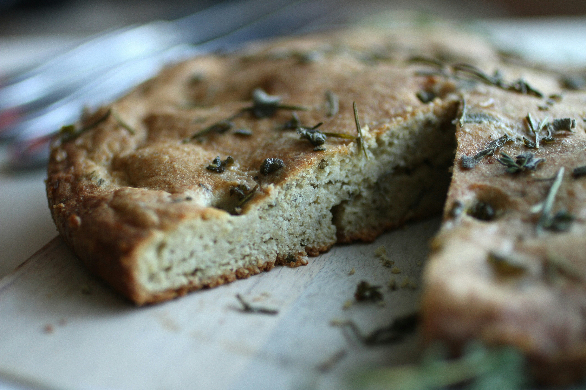

Home
Sourdough Focaccia Bread

Sourdough Focaccia w Rosemary & Garlic Recipe
Focaccia is a classic Italian flatbread— thick or thin, sweet or savory, baked plain or topped with garlic, herbs, olives, or just about anything. The styles are endless.
Ingredients
- 50-75 g active sourdough starter
- 375 g water
- 20 g honey
- 500 g bread flour
- 9 g sea salt
- 3 tbsp olive oil, for coating the pan
- Rosemary
- Garlic cloves
Instructions
- Make the Dough: In the evening: whisk the sourdough starter, water and honey together in a large bowl. Add the flour and salt. Mix to combine and then finish by hand to form a rough dough. It will be wet and sticky. Cover and let rest for 30 minutes to an hour. Timing is flexible here. Then return to the bowl and work the dough into a ball.
- Bulk Rise: Cover the bowl of dough with lightly oiled plastic wrap (or transfer the dough to a lightly oiled dough container). Let the dough rise overnight at room temperature, approximately 68-70 F (20-21 C) for about 12+ hours. The dough will double in size (or more) when ready.
- Second Rise: In the morning, pour 2 tbsp. of olive oil onto a rimmed sheet pan (or 1 tbsp. olive oil if using a non-stick rectangular pan). Use your hands to evenly coat the bottom and sides. With your oiled hands, remove the dough onto the pan, and then flip it to coat both sides. Cover and let rest for 1 1/2 - 2 hours or until very puffy. Preheat your oven to 425 F (220 C).
- Assemble the focaccia: Right before baking, gently dimple the dough with oiled fingertips. I start at the bottom of the pan and work my way to the top. As you dimple, the dough will naturally begin to stretch outwards. You should end up with a rustic rectangular or oval shape, about 14 x 9-inches (36 x 23 cm) or larger. The dough won't go all the way to the corners and sides of the sheet pan- this is OK.
- Add Toppings: Sprinkle rosemary over the dough. Press the rosemary and garlic and garlic into the dough. As the focaccia rises, the dough will puff up. The toppings will pop out if not properly anchored. Keep the garlic cloves wrapped in their papery peels to prevent burning. Remove and discard the peels before eating.
- Bake the focaccia: Place the dough onto the center rack. Bake for 25-30 minutes or until crisp and golden brown. Remove from the oven and cool on a wire rack before cutting.